WMS策略设计-分配策略
前言
WMS（仓储管理系统）作为仓储管理的重要系统，需要支持的主要功能有：
收货
上架
库存分配
拣货
补货
另外对于WMS的电商业务操作又牵涉到
快递分配
耗材分配
众所周知，仓储管理是一个大的运营体系，一个大的仓储中会管理上百家甚至上千家客户的货物，那么在整个作业体系中就会出现千差万别的作业模型。
比如：
1、有些客户要求在收货时，临近过期日期多少天不允许收货，或者在收货时进行提醒，以便于做后面的库存精细化管理；
2、有些产品对上架的库位有要求，整托的如何上，散托的如何上；优先上高层还是低层；
3、出库时，订单的库存分配如何分……
在基于以上复杂的要求，同时为了解决这种B端业务的多样性上，为此设计了一套独有的策略模式。
此类设计不仅能够满足复杂多变的业务场景，并且可扩展性和灵活度都大大的满足将来未知的业务变化，同时将系统逻辑语言转化为用户所认知的文字描述，使其使用更加通俗易懂。
设计思想
其实设计也不复杂，简单来说就是把业务的需求，按照要求进行文字的一段段的切割，每切割下来的一部分文字就作为一个小型算法库，然后最终再将这些小型算法进行组装，一环接一环链接成最终需求。
举个例子，我们那订单出库分配时的库存分配场景来做描述：
要求：
产品A在进行出库时，需要按照生产日期进行先进先出，先生产的要先出，只能从部分类型的库位上面进行分配出库，货架期到期可以出库，售卖期到期不允许出库，过期品不允许出库，并且要优先分配底层库位，方便拣货，最后某些批属性的库存不允许进行出库
其实大家如果只是单纯看这个要求的话还是很难理解清楚，不过不要紧，大家只需要知道，业务有很多要求，我们将这些要求进行一个个的拆分，将他们进行分离出来。很简单是不是：
对生产日期有要求，好像有一个排序在这里
对库位的类型也有要求，可以选择哪些库位进行出库
对货架期和售卖期也有要求
过期的品不能出库，但是也不一定，有时候过期品就是要出库
对库位的层数也有要求
对库存的某些属性也有出库要求，能不能出
好了，身为一个产品那我们就要把这些需求进行抽象为系统语言了。
第一个：对生产日期有要求，好像有一个排序在这里
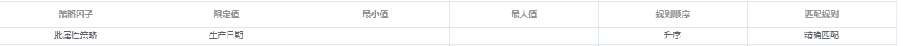
第二个：对库位的类型也有要求，可以选择哪些库位进行出库
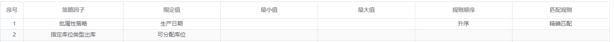
第三个：对货架期和售卖期也有要求
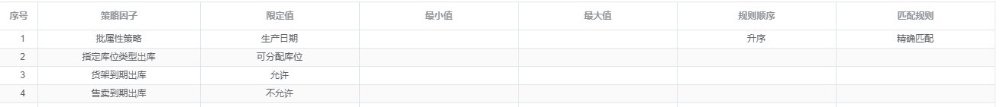
第四个：过期的品不能出库，但是也不一定，有时候过期品就是要出库
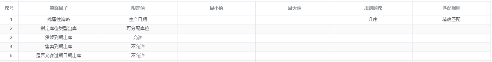
第五个：对库位的层数也有要求
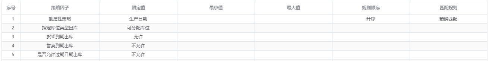
第六个：对库位的层数也有要求
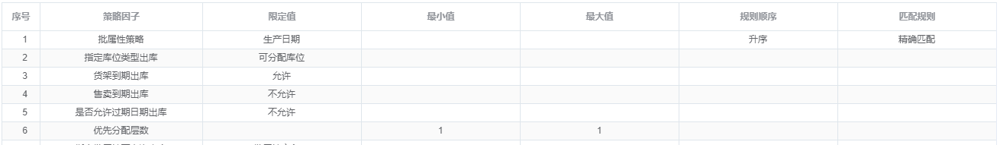
第七个：对库存的某些属性也有出库要求，能不能出
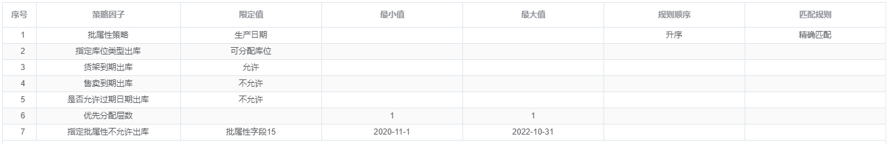
是不是很简单，将每一个要求都定义成一个小型得算法，对于程序来说其实就是一个个方法，而我们只需要将这些方法暴露出来，让用户自己去选择如何组合即可，最终得到他想要得效果。
对于分配策略我们这里实现得策略因子有：
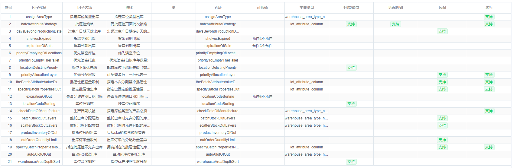
在这么得因子组合下，能够延申出来成千上万的出库分配要求，并且对于系统来说，如果目前的算法因子不能满足，那就可以继续增加新的因子来进行扩展，而不会受到系统架构的限制。
最终呈现的效果如图：
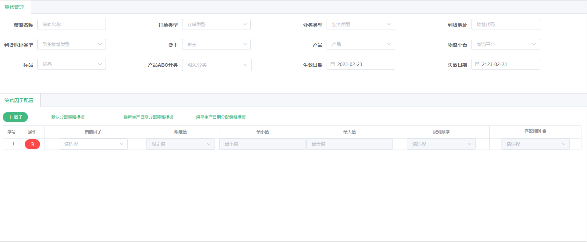
上面的部分就是出库订单的信息，哪些订单哪些产品会被匹配到这条规则。
出库的分配说白了 ，就是挑库存，哪些订单挑哪些库存，我们只要按照你想要的顺序进行一层层的配置即可达到想要的效果。
收货策略
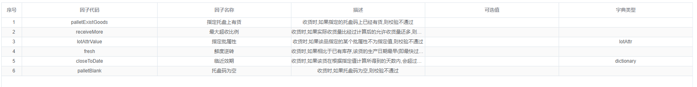
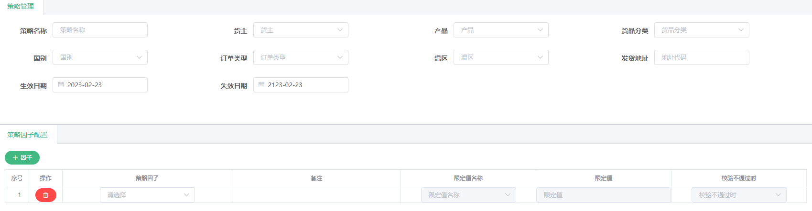
上架策略
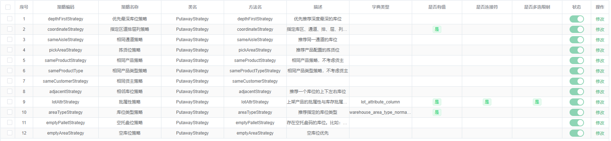
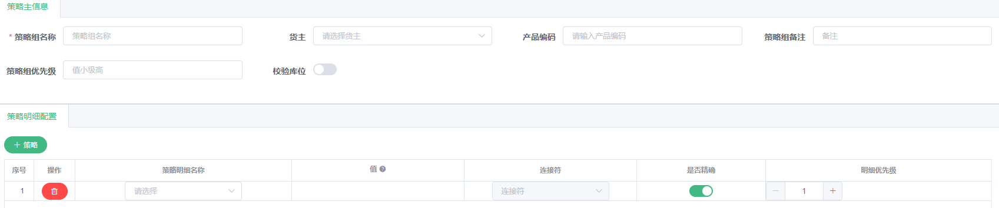
补货策略
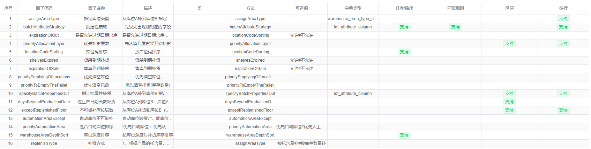
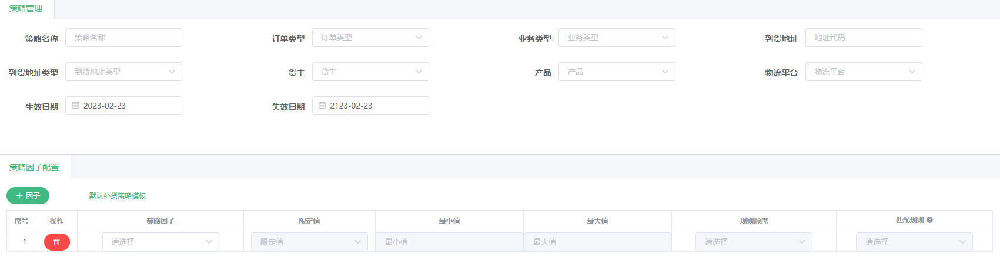
以上策略都是基于相同的设计思想进行设计和开发的。
而对于耗材策略来说有所不同，这里不在进行阐述，但是基本思想是一样，只是耗材策略牵涉的因素比较多。
耗材策略
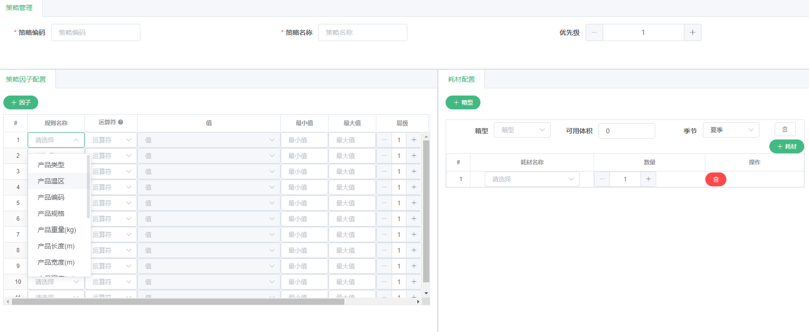
以上就是WMS关于策略模式这一块的设计总结，基本都延申了一个设计思想：将需求进行打撒，再进行组装。就像拼图游戏一样，不是吗？